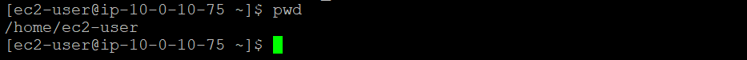
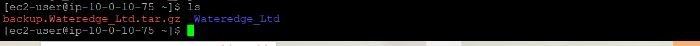
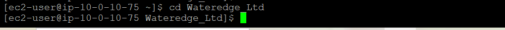
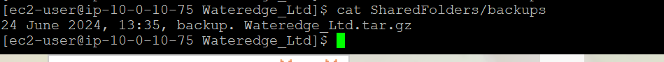

You can create a backup of an entire file structure. To save time, I have already created following folder structure (if need help in creating folders and directories, please read this article How to create company folder structure.
/home/ec2-user/Wateredge_Ltd/
/home/ec2-user/Wateredge_Ltd/HR/
/home/ec2-user/Wateredge_Ltd/HR/New_recruitment.csv Old_recruitment.csv
/home/ec2-user/Wateredge_Ltd/Sales/
/home/ec2-user/Wateredge_Ltd/Sales /touch New_sales.csv Old_sales.csv
/home/ec2-user/Wateredge_Ltd/Marketing/
/home/ec2-user/Wateredge_Ltd/HR/Assessments.csvv
/home/ec2-user/Wateredge_Ltd/Marketing/New_compagin.csv Old_compagin.csv
/home/ec2-user/Wateredge_Ltd/Finance/
/home/ec2-user/Wateredge_Ltd/Finance/New_payroll.csv Old_payroll.csv
/home/ec2-user/Wateredge_Ltd/SharedFolders/
You can use tar to create a backup. To ensure that you are in the /home/ec2-user/ folder, enter the following command into the terminal and press Enter: pwd
To validate that the Wateredge_Ltd folder exists, enter the following command into the terminal and press Enter:
ls –R Wateredge_Ltd
The outcome should look like below
To back up the entire CompanyA folder structure recursively, enter the following command and press Enter:
tar -csvpzf backup.Wateredge_Ltd.tar.gz Wateredge_Ltd
Expected output should look like below
To verify that the archive was created, enter the following command and press Enter: ls
The backup. Wateredge_Ltd.tar.gz folder contains all the folders and files in the Wateredge_Ltd folder. You can copy it and unzip it to get the entire structure on another location or host.
You create a file for logging the date, time, and file name of the backup tar file that you created. This file indicates when you created backups and could be useful to avoid creating unnecessary backups in the future. To navigate to the Wateredge_Ltd folder, enter the following command into the terminal and press Enter: cd Wateredge_Ltd
To create an empty backup file named backups.csv, enter the following command and press Enter: touch SharedFolders/backups.csv
To add the date, time, and file name to the backups.csv file, enter the following command and press Enter:
echo "24 June 2024, 13:35, backup. Wateredge_Ltd.tar.gz" | sudo tee SharedFolders/backups
Expected outcome should look like below
To display the content of the file, enter the following command and press Enter: cat SharedFolders/backups
